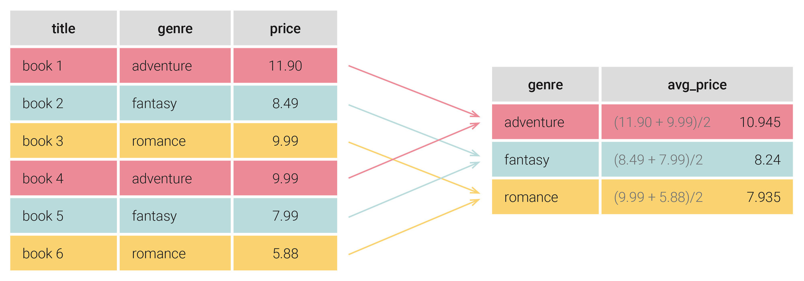
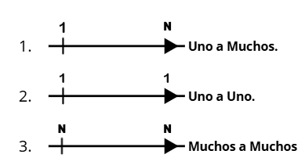
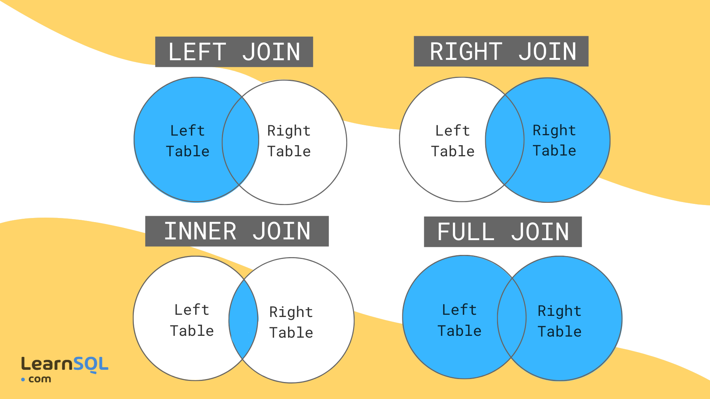

Teoría de SQL 💻
Aprende los conceptos principales de SQL, sus comandos, consultas, relaciones y subconsultas.
¿Qué es SQL?
SQL 🗄️
SQL significa Structured Query Language.
Es un lenguaje que se utiliza para trabajar con bases de datos relacionales.
Permite crear, consultar, modificar y eliminar información de una base de datos.
Conceptos importantes
- Base de datos: conjunto de información.
- Tabla: lugar donde se guardan los datos.
- Campo: columna de una tabla.
- Registro: fila de una tabla.
- Clave primaria: identifica un registro.
- Clave foránea: relaciona dos tablas.
-

Comandos principales
SELECT 🔎
Sirve para consultar información de una tabla.
SELECT * FROM alumnos;
INSERT ➕
Sirve para agregar nuevos datos.
INSERT INTO alumnos VALUES (1, 'Ana');
UPDATE ✏️
Sirve para modificar datos.
UPDATE alumnos SET nombre='Ana';
DELETE 🗑️
Sirve para eliminar datos.
DELETE FROM alumnos WHERE id=1;
CREATE 🛠️
Sirve para crear tablas o bases de datos.
CREATE TABLE alumnos (...);
ALTER 🔧
Sirve para modificar una tabla.
ALTER TABLE alumnos ADD edad INT;
Consultas SQL 🔍
WHERE
Se utiliza para poner una condición en una consulta.
SELECT * FROM alumnos
WHERE edad >= 18;
ORDER BY
Sirve para ordenar los resultados.
SELECT * FROM alumnos
ORDER BY nombre ASC;
GROUP BY
Sirve para agrupar registros que tienen valores iguales.
SELECT curso, COUNT(*)
FROM alumnos
GROUP BY curso;

Funciones 📊
- COUNT: cuenta registros.
- SUM: realiza una suma.
- AVG: calcula un promedio.
- MAX: obtiene el máximo.
- MIN: obtiene el mínimo.
Relaciones entre tablas 🔗
Uno a uno
Un registro de una tabla se relaciona con un solo registro de otra tabla.
Uno a muchos
Un registro puede relacionarse con varios registros de otra tabla.

JOIN 🔗
Sirve para combinar información de dos o más tablas.
SELECT *
FROM alumnos
INNER JOIN cursos;

Subconsultas 🔍
¿Qué es una subconsulta?
Una subconsulta es una consulta SQL que se encuentra dentro de otra consulta.
La consulta interna obtiene información que utiliza la consulta principal.
Ejemplo 💡
Buscar alumnos que tengan una edad mayor al promedio.
SELECT nombre
FROM alumnos
WHERE edad > (
SELECT AVG(edad)
FROM alumnos
);
Subconsulta con WHERE
Se puede utilizar una subconsulta dentro de WHERE.
SELECT nombre
FROM alumnos
WHERE id_curso IN (
SELECT id FROM cursos
);
Subconsulta con FROM
También se puede utilizar una subconsulta dentro de FROM.
SELECT promedio
FROM (
SELECT AVG(edad) AS promedio
FROM alumnos
) AS resultado;